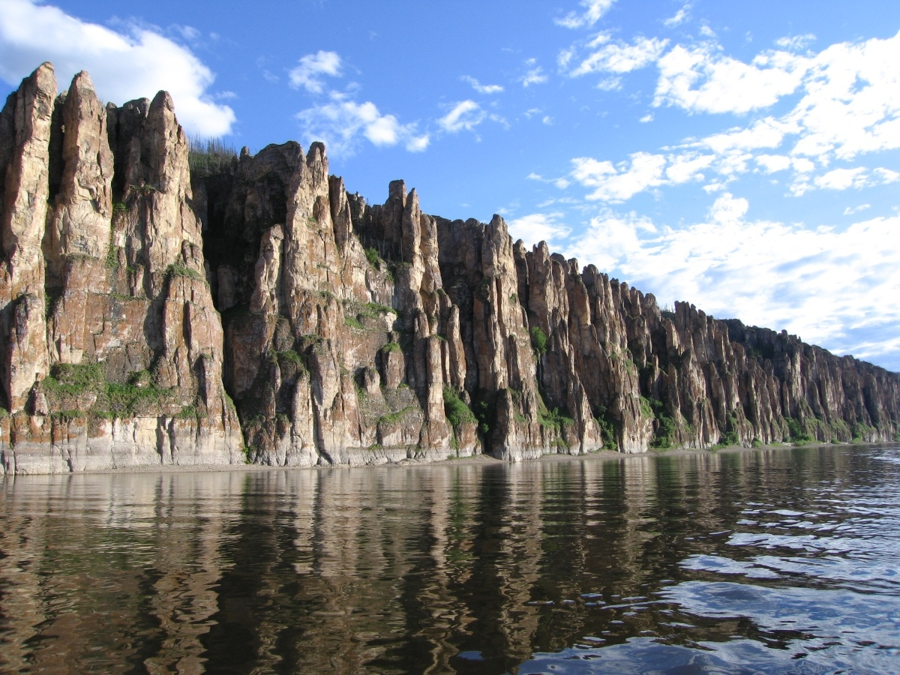
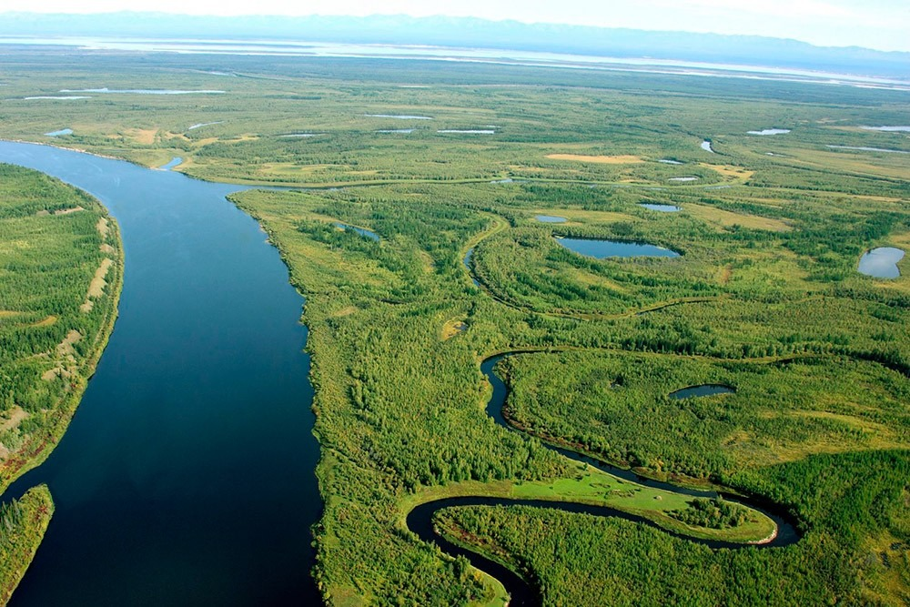
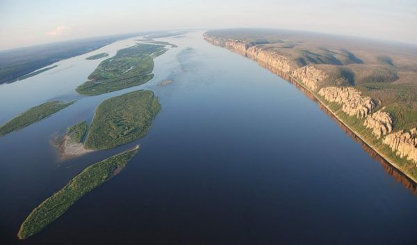
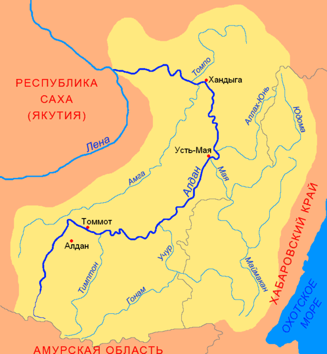

Лена
Главная страница


Лена — река в Восточной Сибири России, впадает в море Лаптевых Северного Ледовитого океана. Длина вместе с дельтой — 4400 км. В некоторых случаях указывается длина 4294 км без учёта Быковской протоки (106 км) в дельте Лены. Площадь бассейна — 2,49 млн км². Годовой сток равен 515,6 км³. Протекает по территории Иркутской области и Якутии, некоторые из её притоков относятся к Забайкальскому, Красноярскому, Хабаровскому краям, Бурятии и Амурской области.
Истоком Лены считается небольшое болото в 15 км от перевала Солнцепадь и в 10 км к западу от Байкала, расположенное на высоте 1470 м у подножия безымянной вершины высотой 2023 м, входящей в Байкальский хребет. 19 августа 1997 года у истока реки была установлена часовня с памятной табличкой. Всё верхнее течение Лены до впадения Витима, то есть почти третья часть её длины, приходится на горное Прибайкалье. Расход воды в районе Киренска — 1100 м³/с.
Ниже Якутска Лена принимает два главных притока — Алдан и Вилюй. Теперь это гигантский водный поток; даже там, где она идёт одним руслом, её ширина доходит до 3 км, а глубина превышает 16—20 м. Там же, где много островов, Лена разливается на 20—30 км. Берега реки суровы и безлюдны. Населённые пункты очень редки. В нижнем течении Лены её бассейн очень узок: с востока подступают отроги Верхоянского хребта — водораздела рек Лены и Яны, с запада незначительные возвышенности Среднесибирского плоскогорья разделяют бассейны Лены и реки Оленёк. Ниже села Булун реку сжимают подходящие к ней совсем близко Хараулахский хребет с востока и кряж Чекановского — с запада. Примерно в 150 км от моря начинается обширная дельта.
Длинна: 4400 км
Площадь: 2 490 тыс. км²
Расход воды: 16 350 м³/сек

РЕКА ЛЕНА НА КАРТЕ